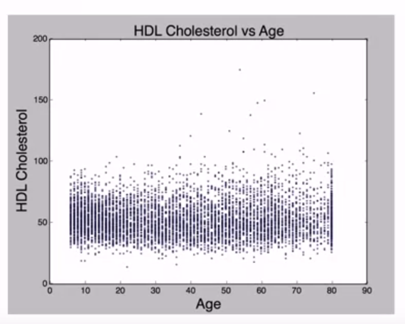

这里是 week 3-2，在了解了Multivariate Categorical Data之后，当然就是Multivariate Quantitative Data 啦
Start with Me | Coursera - Understanding and Visualizing Data with Python week 3-2 - Multivariate Quantitative Data and Quiz
日常濒临断更
Multivariate Quantitative Data
Gathering Multivariate Quantitative Data
What is your age?
Let's measure your BMI
Let's measure your blood pressure
Let's measure your cholesterol level
What is Multivariate Quantitative Data ?
Multivariate
more than one trait recorded per unit
Quantitative
takes on a measured numeric value
Recoding Multivariate Quantitative Data
Displaying with Univariate Histograms
- median
- spread
Displaying with a Scatterplot
- A scatter plot graphs two quantitative variables together
- is advantage at the association between two variables
Association - Type
Linear association
the pattern is a line
Quadratic association
the pattern is parabolic
No association
there is no pattern
Association - Direction
Positive linear association
pattern has a positive slope, when x increases, y increases
Negative linear association
pattern has a negative slope, when x increases, y decreases
Association - Strength
weak linear association
points are largely scattered along a line
moderate linear association
points are partially scattered along a line
strong linear association
points are minimally scattered along a line
Correlation
Pearson correlation
number between -1 and 1 indicating the strength and sign of association between 2 variables
Correlation Does Not Imply Causation
Outliers in Multivariate Quantitative Data
Displaying Quantitative and Categorical Data
什么是多元数值数据
多元
在每个主体上测量不止一个变量
数值数据
例如：年龄、BMI、血压、胆固醇含量
- 这并不能帮助我们了解样本的特征，所以需要其他方法将它可视化
用单变量直方图可视化
- 通过直方图可以了解年龄/血压的中位数、离散程度
- 但是如果是对于年龄和血压这两个变量之间的关系感兴趣呢？
- 老年人的血压是倾向于高还是低?
用散点图可视化
解决两个变量之间关系可以使用散点图
散点图将两个数值变量绘制在一起
散点图将年龄作为x轴，血压作为y轴，每个点代表一个人
散点图优点：可以告诉我们这两个变量之间的关系
描述关系
类型
线性相关
点与点之间的图案形成一条线
二次方相关
点与点之间的团形成抛物线，在开始时上升，后来回落
不相关

- 随着年龄的增加，没有看见胆固醇含量增加/减少，所以没有关联
方向
正线性相关
- 线的斜率为正
- 当x增加时，y也会增加
- 随着年龄的增加，收缩压也会增加
负线性相关
- 线的斜率为负
- 当x增加时，y减少
- 随着车辆越来越重，里程数在减少
强度
弱相关
- 这些点主要是沿着这条线分散
中度相关
- 散点要小得多
强相关
- 散点非常小
相关的强度不取决于符号，可以有很强的正向相关和很强的负向相关
皮尔逊相关
可以量化线性相关的强度和方向，就是皮尔逊相关
皮尔逊相关的符号正是相关的方向
皮尔逊相关性越接近1或-1，那么相关性越强
- 微弱的正线性相关
- 相关是正的，但是不那么接近1
- 中度的正线性相关
- 随着关联性越来越强，皮尔逊相关也会增加，但是仍然没有那么接近1
- 非常强的负线性相关
- 非常接近于-1，相关性非常强
基本没有相关性
皮尔逊相关接近0，是-0.01
相关性并不意味着因果关系
虽然可以看见随着年龄的增加，血压也在增加，但是这并不意味着年龄一定是血压升高的原因
也许红色矩形内的人恰好都抽过烟，那么吸烟才是导致高血压的真正原因
恰好在样本中老年人吸烟比较多，所以让人看起来年龄是导致血压高的原因
识别潜在的离群值
- 对于数值数据来说，那个潜在的离群值就是一个强烈偏离线和其他数据的点
- 圈出来的是部分离群值
同时显示分类数据和数值数据
- 记录了血压、年龄，也记录了性别
- 将这三个变量一起显示，可以给分类变量性别加上不同的颜色
- 从中可以看出，男性往往有更高的血压，尤其是在年轻的时候
- 随着人们年龄的增长是更突出的女性，粉色的点比黑色的点要平坦得多
Quiz - Multivariate Data
A bicycle rental company has counted the number of bicycle rentals in each season (spring, summer, fall, winter) for the past two years.
Additionally, the company has collected weather data (temperature, wind speed and humidity).
Use the data for bicycle rentals and weather presented in the tables and graphs below to answer these practice quiz questions.
Which proportion describes the most popular season for renting bicycles in Year 1?
A. 15000 / 1243103
B. 641479 / 2049576
C. 419650 / 1243103
D. 1061129 / 3292679
Which proportion describes the least popular season for renting bicycles in Year 2?
A. 641479 / 2049576
B. 321348 / 471348
C. 2049576 / 3292679
D. 471348 / 3292679
E. 321348 / 2049576
Which statement best describes the meaning of 326,137 / 841,613?
- The proportion of Total rentals that occurred in Winter.
B. The proportion of Year 1 rentals that occurred in Winter.
C. The proportion of Total rentals that occurred in Year 1.
D. The proportion of Total Winter rentals that occurred in Year 1.
How do the proportion of rides in the Summer compare between Year 1 and Year 2?
A. The proportion is higher in Year 2 because 571,273 is larger than 347,316.
B. The proportion is higher in Year 1 because 2,049,576 is larger than 1,243,103.
C. Can't tell without doing additional calculations
The company suspects that they will have a larger increase in rentals from registered riders compared to non-registered riders over the two years. They make this bar chart to see how the numbers compare.
For which group does the increase in riders seem larger?
A. Registered
B. Can't tell from this graph
C. Non-registered
D. They look the same
What kind of graph is this?
A. Bar chart
B. Side-by-side bar chart
C. stacked bar chart
D. mosaic plot
The bicycle company is interested in knowing how rides are affected by various weather conditions. To start with, they want to examine the registered wind speeds (after a normalization).Is wind speed a discrete or continuous variable?
A. Discrete
B. Continuous
C. Can't tell
The company wants to consider how weather patterns affect the bicycle rentals. They first consider how the measured temperature compares to the apparent temperature, or the temperature that humans perceive it to be. The temperatures have been normalized to fall on a scale between 0 and 1.
Yesterday the normalized real temperature was 0.4. Today the normalized real temperature is 0.8. Which day would you expect to have a higher apparent temperature?
A. Yesterday
B. Today
C. Can't tell
The scatterplot between temperature and apparent temperature is linear. What is the strength of the scatterplot between temperature and apparent temperature?
A. Strong
B. Moderate
C. Weak
D. Can't tell
Eventually, the bicycle company wants to think about how bicycle rides vary based on weather. After looking at humidity, they think that the humidity might be associated with the general weather conditions. They consider weather situations of 1 = clear to partly cloudy, 2 = misty with no to some clouds, 3 = light rain and light snow, and 4 = heavy rain, snow, thunderstorms, and other extreme weather.
Based on the side-by-side boxplots below, which weather condition has the highest mean humidity?
A. 1 = clear to partly cloudy
B. 2 = misty with no to some clouds
C. 3 = light rain and light snow
D. 4 = heavy rain, snow, thunderstorms, and other extreme weather
E. Can't tell
参考答案
C
E
D
C
We would need to compare two proportions. For this, we would need to calculate two separate proportions with two different numerators and denominators.
A
B
There are groupings of bars within this graph. This indicates that there are at least two groups being compared in this side-by-side bar chart.
B
Wind speed is a quantitative continuous variable.
B
Because the scatterplot has a positive direction, we expect the apparent temperature to be larger when the actual temperature is larger.
A
Almost all of the point are very close to a line, so we consider the strength of the linear relationship to be strong.
E
A mean is not shown in boxplots, although the median is.
坚持学习
本博客所有文章除特别声明外，均采用 CC BY-SA 4.0 协议 ，转载请注明出处！